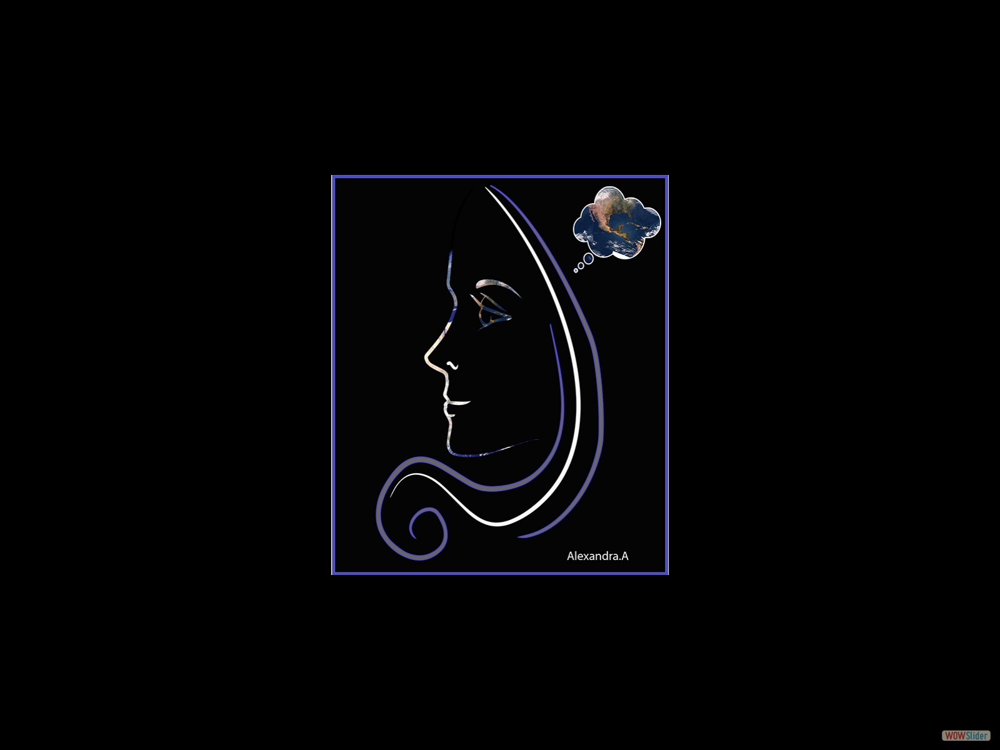
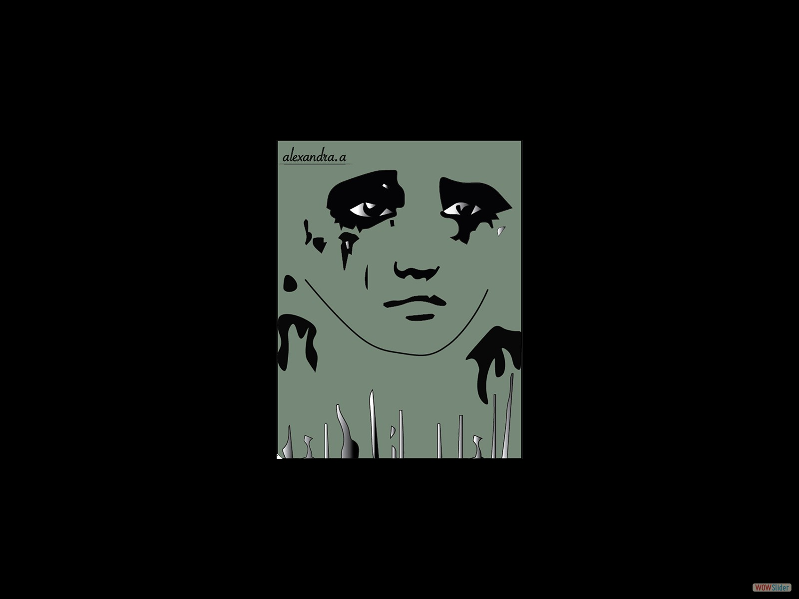
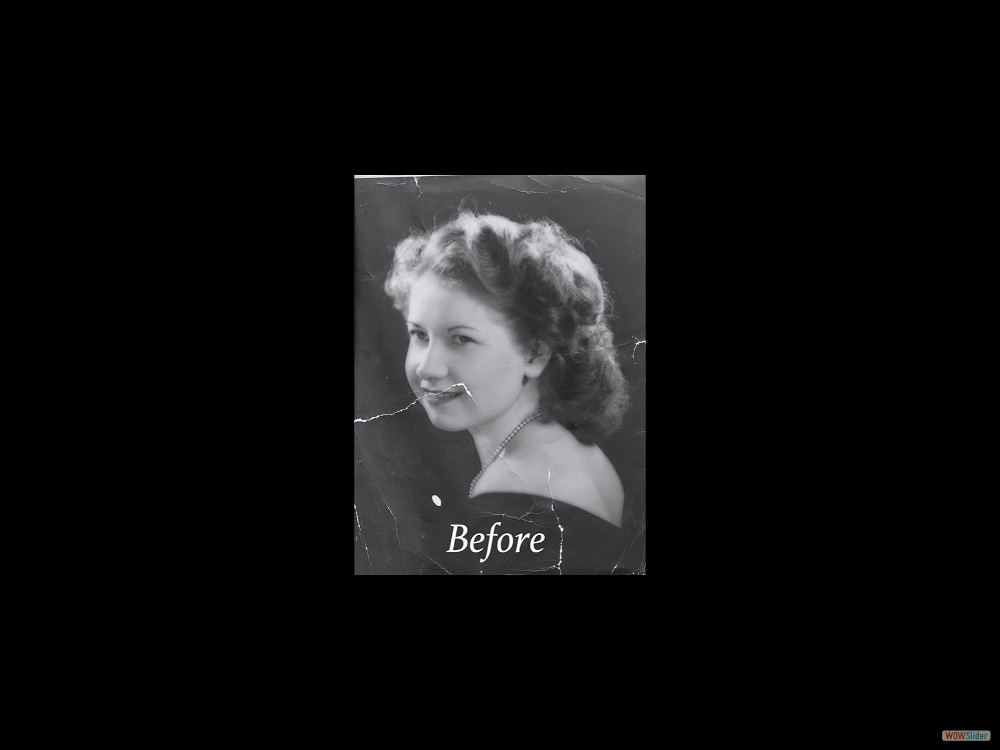

Home
About me
Graphic Design
Contact Me
My Graphic Design Work



This is an old black and white image with rips.
This is the imager after restoration using Photoshop to clean the rips and help bring the image to its original condition.
1
2
3
4
5
6
http://wowslider.com/
by WOWSlider.com v8.7.1m


 This is the imager after restoration using Photoshop to clean the rips and help bring the image to its original condition.
This is the imager after restoration using Photoshop to clean the rips and help bring the image to its original condition. 1
1 2
2 4
4 5
5 6
6